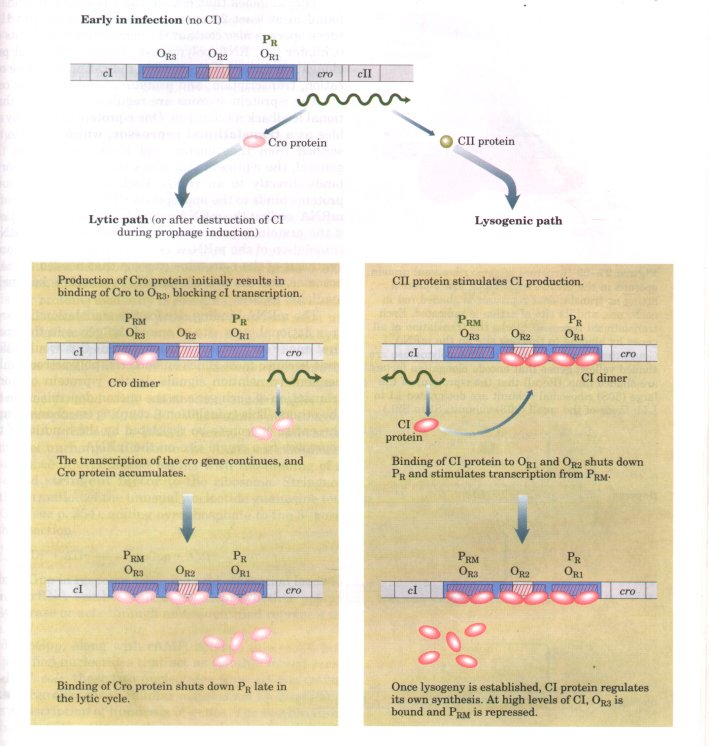
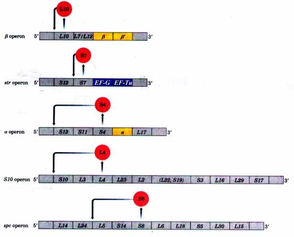
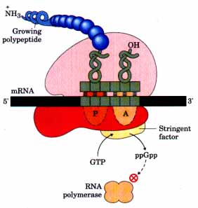
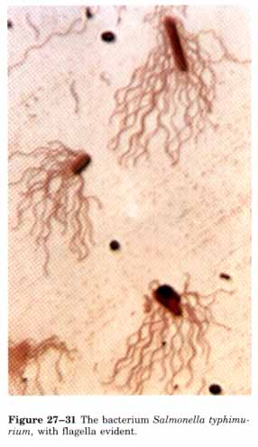
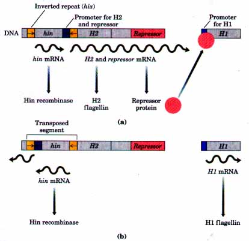

In bacteria, changes in the cellular demand for protein synthesis are met by increasing the number of ribosomes rather than by altering the activity of individual ribosomes. In general, the number of ribosomes increases as the cellular growth rate increases. At high growth rates, ribosomes constitute approximately 45% of the cell's dry weight. Because the fraction of cellular energy and matter devoted to making ribosomes is so large and the function of ribosomes is so important, it is essential for the cell to coordinate the synthesis of ribosomal proteins and rRNAs. This regulation is distinct from the mechanisms described above because it occurs largely at the level of translation.

Figure 27-28 Antagonistic activities of the CI and Cro repressors at OR in bacteriophage λ. The genes and regulatory sequences are not drawn to scale, and only the region near OR(I-3), is shown. The CI repressor binds the three OR operators in the order ORl>OR2>OR3. The Cro repressor binds the same three sites but has the reverse binding affinity. The CI repressor binds cooperatively so that both OR1 and OR2 are bound at low concentrations of CI.
The 52 genes that encode the ribosomal proteins (r-proteins) are found in at least 20 operons, each containing 1 to 11 genes. Some of these operons also contain the genes for the subunits of DNA primase (Chapter 24), RNA polymerase (Chapter 25), and protein synthesis elongation factors (Chapter 26), indicating the close coupling of replication, transcription, and protein synthesis during cell growth.
The r-protein operons are regulated primarily through a translational feedback mechanism. One r-protein encoded by each operon doubles as a translational repressor, which binds to the mRNA transcribed from that operon and blocks translation (Fig. 27-29). In general, the r-protein that plays the role of repressor is one that also binds directly to an rRNA. Each of the translational repressor rproteins binds to the appropriate rRNA with higher affinity than to its mRNA, so that the mRNA will be bound and translation repressed only if the protein is present in excess over available rRNAs. In this way, translation of the mRNAs encoding r-proteins is repressed only when synthesis of the r-proteins exceeds that needed to make functional ribosomes, and the rate of r-protein synthesis is kept in balance with the available rRNAs.

Figure 27-29 Structure of some ribosomal protein operons in the mRNA transcripts. The r-protein acting as translational repressor is shaded red in each case, and its site of action is indicated. Each translational repressor blocks the translation of all genes by binding to this one site on the mRNA. Genes that encode subunits of RNA polymerase are shaded yellow; genes that encode elongation factors are shaded blue. (Recall that the r-proteins of the large (50S) ribosomal subunit are designated Ll to L34; those of the small (30S) subunit, Sl to 521.)
| The mRNA binding site for the
translational repressor is near the translational start
site of one of the genes in the operon, usually the first
one (Fig. 27-29). In most operons this would affect only
that one gene because most genes on bacterial
polycistronic mRNAs have independent translation signals.
In the r-protein operons, however, the translation of
each gene in the operon depends upon translation of all
the others. This translational coupling (mechanism
unknown) permits the entire operon to be regulated by the
binding of the translational repressor to a single site
on the mRNA. The r-protein operons are also apparently regulated at the level of transcription initiation, because transcription increases with increasing cellular growth rates. Neither the mechanism of transcriptional regulation nor the detailed relationship between transcriptional and translational regulation in this system is known. |
 Figure 27-30 The stringent response to amino acid starvation in E. colfi is triggered by binding of an uncharged tRNA in the ribosomal A site. A protein called stringent factor binds to the ribosome and catalyzes the synthesis of ppGpp. The signal ppGpp inhibits RNA polymerase by an unknown mechanism, reducing rRNA synthesis. |
| The synthesis of r-proteins evidently is
coordinated with the available rRNAs. The regulation of
ribosome production therefore must ultimately reflect a
regulation of rRNA synthesis. In E. coli, rRNA synthesis
from the seven rRNA operons responds to cellular growth
rate and to changes in the availability of crucial
nutrients, particularly amino acids. The regulation coordinated with amino acid concentrations is called the stringent response (Fig. 27-30). When amino acid concentrations are low, rRNA synthesis is halted. Amino acid starvation leads to the binding of uncharged tRNAs to the A site on ribosomes. This triggers a sequence of events that begins with the binding of a protein enzyme called stringent factor to the ribosome. Stringent factor catalyzes the formation of the unusual nucleotide guanosine tetraphosphate (ppGpp; see p. 354), adding pyrophosphate to the 3' position of GDP in the reaction GDP + ATP The abrupt rise in ppGpp in response to amino acid starvation leads to a great reduction in rRNA synthesis. It is not clear whether ppGpp binds to RNA polymerase or acts through an unidentified repressor or activator protein. |
 Figure 27-31 The bacterium Salmonella typhimurium, with flagella evident. |
The nucleotide ppGpp, along with cAMP, belongs to a small but growing class of modified nucleotides that act as cellular second messengers (p. 354). In E. coli, these two nucleotides serve as starvation signals; they cause large changes in cellular metabolism by increasing or decreasing the transcription of hundreds of genes. The coordination of cellular metabolism with cell growth is very complex, and many regulatory mechanisms remain to be discovered.
Salmonella bacteria live in the intestines of mammals and move by rotating flagella that emerge from the cell surface (Fig. 27-31). The many copies of the protein flagellin (Mr 53,000) that make up the flagella are prominent targets for the action of mammalian immune systems. To evade the immune system, Salmonella is able to switch between two distinct flagellin proteins once about every 1,000 cell generations in a process called phase variation.
| The switch is accomplished by periodic inversion of a segment of DNA containing the promoter for a flagellin gene. The inversion is a site-specific recombination reaction (p. 845) mediated by a recombinase called Hin at specific sequences of 14 base pairs (hix sequences) at either end of the DNA segment (Fig. 27-32). When the DNA segment is in one orientation, the gene for H2 flagellin and another gene encoding a repressor are expressed. The repressor shuts down expression of the gene for Hl flagellin. When the DNA segment is inverted, the H2 and repressor genes are no longer transcribed, and the HI gene is induced as the repressor is depleted. The Hin recombinase is encoded by the hin gene contained within the DNA segment that is inverted. The reaction also requires the HU protein and the FIS protein. |  Figure 27-32 Regulation of flagellin genes in Salmonella. Hl and H2 are difl'erent flagellins. The hin gene encodes the recombinase that catalyzes inversion of the DNA segment that inclndes the H2 promoter and the hin gene. The recombination sites tinverted repeats) are called hix (shown in yellow). In one orientation H2 is expressed (a); in the opposite orientation HI is expressed (b). The interconversion between these two states is called phase variation. |
This regulatory mechanism has the advantage that it is absolute. Even low background levels of gene expression are impossible if the gene is physically separated from its promoter. An absolute on/off switch is crucial in this system, because a flagellum with even one copy of the wrong flagellar protein would be vulnerable to the action of antibodies directed against that protein. The Salmonella system is by no means unique. Closely related regulatory systems have been found in a number of bacterial species and bacteriophages, and recombination systems with similar functions have been found in eukaryotes (Table 27-2). Gene regulation by DNA rearrangements that move genes and/ or promoters is a particularly common mechanism used by pathogens to change host range or to change surface proteins as a defense against the host immune system.
| Table 27-2 Examples of gene regulation by recombination | |||
| System | Recombinase /recombination site | Tye of recombination | Function |
| Phase variation (Salmonella) | Hin/hix | Site-specific | Alternative expression of two flagellin genes; evades host immune system |
| Host range (bacteriophage Mu) | Gin/gix | Site -specific | Alternative expression of two sets of tail fiber genes; affects host range |
| Mating type switch(yeast) | HO endonuclease RAD52 protein , other proteins/MAT | Nonreciprocal gene conversion | Alternative expression of two mating types of yeast, a and a; cells of difierent mating types proteins can mate and undergo meiosis |
| Antigenic variation (trypanosomes) | Varies | Nonreciprocal gene conversion | Successive expression of different genes conversion* encoding the variable surface glycoproteins (VSGs). The outer surface of a trypanosome is made up of multiple copies of a single VSG, the major surface antigen. By expressing a new VSG gene at intervals, the trypanosome alters its glycoprotein coat and evades the host immune system. |
* Nonreciprocal gene conversion is a class of recombination events not discussed in Chapter 24. Genetic information is moved from one part of the genome (where it is silentl to another (where it is expressed) in a reaction similar to replicative transposition.
* Trypanosomes cause African sleeping sickness and other diseases (see Box 21-1). A cell can "change coats" more than 100 times, precluding an effective defense by the host immune system. 75-ypanosome infections are chronic and if untreated result in death.

 ppGpp + AMP
ppGpp + AMP